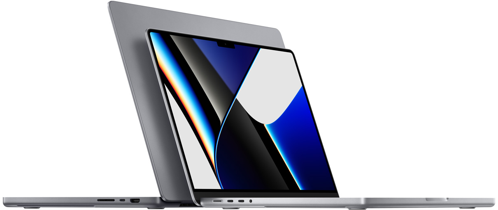

The most powerful MacBook Pro ever is here. With the blazing-fast M1 Pro or M1 Max chip — the first Apple
silicon designed for pros — you get groundbreaking performance and amazing battery life. Add to that a
stunning Liquid Retina XDR display, the best camera and audio ever in a Mac notebook, and all the ports you
need. The first notebook of its kind, this MacBook Pro is a beast.
From ₹194900.00*
13x
21hr
3.7x
11x
faster graphics performance
hours battery life
faster CPU performance
faster machine learning
Scary fast
Up to 10-core CPU
Up to 16-core GPU
Up to 32GB of unified memory
Up to 200GB/s memory bandwidth
Scary faster
Up to 16-core CPU
Up to 32-core
Up to 64GB of unified memory
Up to 400GB/s memory bandwidth
M1 Pro and M1 Max scale the amazing M1 architecture to new heights — and for the first time, they bring a
system on a chip (SoC) architecture to a pro notebook. Both have more CPU cores, more GPU cores and more
unified memory than M1. Along with a powerful Neural Engine for supercharged machine learning and upgraded
media engines with ProRes support, M1 Pro and M1 Max allow pros to do things they never could before.
Feast your eyes on XDR.
Liquid Retina XDR. The best display ever in a notebook features Extreme Dynamic Range and a
million-to-one contrast ratio. HDR content comes to life in photos, video and games — with refined
specular highlights, incredible detail in shadows, and vibrant, true-to-life colours. Each display
is factory calibrated and features pro reference modes for HDR colour grading, photography, design
and print production.
ProMotion. ProMotion comes to Mac for the first time, making everything from scrolling through a web
page to gaming super-fluid and responsive — while also reducing power consumption. With refresh
rates of up to 120Hz, the adaptive technology automatically adjusts to match the movement of the
content. Video editors can also choose a fixed refresh rate that precisely aligns with their
footage.
1,000
nits sustained brightness
1,600
nits peak brightness
10,000
mini-LEDs
10,00,000:1
contrast ratio
10,00,000,000
colours
Pro power meets pro keyboard.
For the first time, Magic Keyboard brings a full‑height function key row to MacBook Pro — with the tactile
feel of mechanical keys that pros love. It includes new keyboard shortcuts for Spotlight, Dictation and Do
Not Disturb. And Touch ID has a new, tactile ring that guides your finger for a fast, easy, secure way to
unlock your Mac.
macOS Monterey and Apple Silicon. Beauty and the beast.
Use a single keyboard and mouse or trackpad to work seamlessly between your Mac and iPad with Universal
Control (Beta). Automate complex tasks with Shortcuts. Share your screen, watch together or collaborate with
FaceTime. And browse with the best Safari yet. When it's time to concentrate, Focus lets you control which
people and apps can reach you.
Why Mac ?

Easy to learn. Astoundingly powerful. And designed to let you work, play and create in entirely new ways.
It’s the computer that comes packed with apps that are ready to go, right out of the box. Free, regular
software updates mean it’s always running at it’s best, and always getting better. And if you already have
an iPhone, it feels familiar from the moment you turn it on.
Ready, set up, go.
With Mac, there’s no complicated setup process. Sign in to your iCloud account, and information from
your iPhone or iPad appears automatically. Use Migration Assistant to transfer your settings, user
accounts and more in a snap. And if you have questions or need help, Apple Support is always just an
online chat or a phone call away.
Mac does more. So you can, too.
Mac is powerful, capable and packed with everything you need to bring your work to the next level. Take
your
productivity and creativity further with apps for anything you can imagine. Even use apps from Microsoft
365
and Adobe Creative Cloud without missing a beat.2 No matter who you are, or what you want to do, Mac can
make it happen.
Always intuitive. Never intimidating.
Mac makes it easy to find what you need, stay organised and take on any task. Its clear, simple design
just makes sense — especially if you have an iPhone. So things like managing multiple windows and
keeping track of your files are a breeze. And with quick access to all the controls you need, exactly
when you need them, navigating your Mac is easier than ever.
Works perfectly with all your Apple devices.
Mac is the perfect companion to your other Apple devices. Read a message on your Apple Watch and reply
from your Mac. Start a presentation on your Mac and rehearse it on your iPhone while you’re on the go.
Unlock your Mac with your Apple Watch. Or even share entire photo albums with friends from across the
room.
Keep what’s private, pri••••.
Apple Silicon and macOS Big Sur bring Mac the most advanced security of any personal computer. Mac comes
with built-in protections against malware and viruses, and it gives you the freedom to choose what you
share and how you share it. FileVault even encrypts your entire system for added security. So no matter
what you’re doing, Mac helps your private information stay that way.
Tech Specs
14″ and 16″ MacBook Pro
14″ MacBook Pro starts at ₹1,94,900 and 16″ MacBook Pro starts at ₹2,39,900
Chip
Apple M1 Pro chip
10-core CPU with 8 performance cores and 2 efficiency cores
16-core GPU
16-core Neural Engine
200GB/s memory bandwidth
Media engine
Hardware-accelerated H.264, HEVC, ProRes and ProRes RAW
Video decode engine
Video encode engine
ProRes encode and decode engine
Apple M1 Pro chip
10-core CPU with 8 performance cores and 2 efficiency cores
16-core GPU
16-core Neural Engine
200GB/s memory bandwidth
Media engine
Hardware-accelerated H.264, HEVC, ProRes and ProRes RAW
Video decode engine
Video encode engine
ProRes encode and decode engine
Apple M1 Max chip
10-core CPU with 8 performance cores and 2 efficiency cores
32-core GPU
16-core Neural Engine
400GB/s memory bandwidth
Media engine
Hardware-accelerated H.264, HEVC, ProRes and ProRes RAW
Video decode engine
Two video encode engines
Two ProRes encode and decode engines
Display
Liquid Retina XDR display
41.05 cm / 16.2-inch (diagonal) Liquid Retina XDR display;1 3456x2234 native
resolution at 254 pixels per inch
XDR (Extreme Dynamic Range)
Up to 1,000 nits sustained (full-screen) brightness, 1,600 nits peak brightness
10,00,000:1 contrast ratio
Colour
1 billion colours
Wide colour (P3)
True Tone technology
Refresh rates
ProMotion technology for adaptive refresh rates up to 120Hz
Fast-charge capable with included 140W USB-C Power Adapter
Storage
512 GB
512 GB SSD
Configurable to:
1TB, 2TB, 3TB, 4TB or 8TB
1 TB
1 TB SSD
Configurable to:
2TB, 4TB or 8TB
1 TB
1 TB SSD
Configurable to:
2TB, 4TB or 8TB
Charging and Expansion
SDXC card slot
HDMI port
3.5 mm headphone jack
MagSafe 3 port
Three Thunderbolt 4 (USB-C) ports with support for:
Charging
DisplayPort
Thunderbolt 4 (up to 40 Gbps)
USB 4 (up to 40 Gbps)
Display Support
Simultaneously supports full native resolution on the built-in display at 1 billion
colors and:
Up to two external displays with up to 6K resolution at 60Hz at over a billion colors (M1 Pro) or
Up to three external displays with up to 6K resolution and one external display with up to 4K resolution
at 60Hz at over a billion colors (M1 Max)
Thunderbolt 4 digital video output
Native DisplayPort output over USB‑C
VGA, HDMI, DVI, and Thunderbolt 2 output supported using adapters (sold separately)
HDMI digital video output
Support for one display with up to 4K resolution at 60Hz
DVI output using HDMI to DVI Adapter (sold separately)
Video Playback
Supported formats include HEVC, H.264 and ProRes
HDR with Dolby Vision, HDR10 and HLG
Audio Playback
Supported formats include AAC, MP3, Apple Lossless, FLAC, Dolby Digital, Dolby Digital Plus and Dolby
Atmos
Keyboard and Trackpad
Backlit Magic Keyboard with:
78 (US) or 79 (ISO) keys including 12 full-height function keys and 4 arrow keys
in an inverted-T arrangement
Touch ID
Ambient light sensor
Force Touch trackpad for precise cursor control and pressure-sensing
capabilities; enables Force clicks, accelerators, pressure-sensitive drawing and
Multi-Touch gestures.
1080p FaceTime HD camera
Advanced image signal processor with computational video
Audio
High-fidelity six-speaker sound system with force-cancelling woofers
Wide stereo sound
Support for spatial audio when playing music or video with Dolby Atmos on built-in speakers
Spatial audio with dynamic head tracking when using AirPods (3rd generation), AirPods Pro and AirPods
Max
Studio‑quality three-mic array with high signal-to-noise ratio and directional beamforming
3.5 mm headphone jack with advanced support for high-impedance headphones
Operating Requirements
Line voltage: 100V to 240V AC
Frequency: 50Hz to 60Hz
Operating temperature: 10° to 35° C (50° to 95° F)
Storage temperature: –25° to 45° C (–13° to 113° F)
Relative humidity: 0% to 90% non-condensing
Operating altitude: tested up to 3,000 metres (10,000 feet)
Maximum storage altitude: 4,500 metres (15,000 feet)
Maximum shipping altitude: 10,500 metres (35,000 feet)
Size and Weight
Height: 1.55 cm (0.61 inches)
Width: 31.26 cm (12.31 inches)
Depth: 22.12 cm (8.71 inches)
Weight (M1 Pro): 2.1 kg (4.7 pounds)
Weight (M1 Max): 2.2 kg (4.8 pounds)
Operating System
macOS
macOS is the most advanced desktop operating system in the world. macOS Monterey introduces powerful
new features to help you connect, share and create like never before.
In the Box
16‑inch MacBook Pro
140W USB-C Power Adapter
USB-C to MagSafe 3 Cable (2 m)
Limited Warranty and Service
Your MacBook Pro comes with 90 days of complimentary technical support and a 1-year limited warranty.
Purchase AppleCare+ for Mac to extend your coverage to 3 years from your AppleCare+ purchase date and
add up to two incidents of accidental damage coverage every 12 months, each subject to a service fee of
₹8900 for screen damage or external enclosure damage, or ₹25900 for other damage.